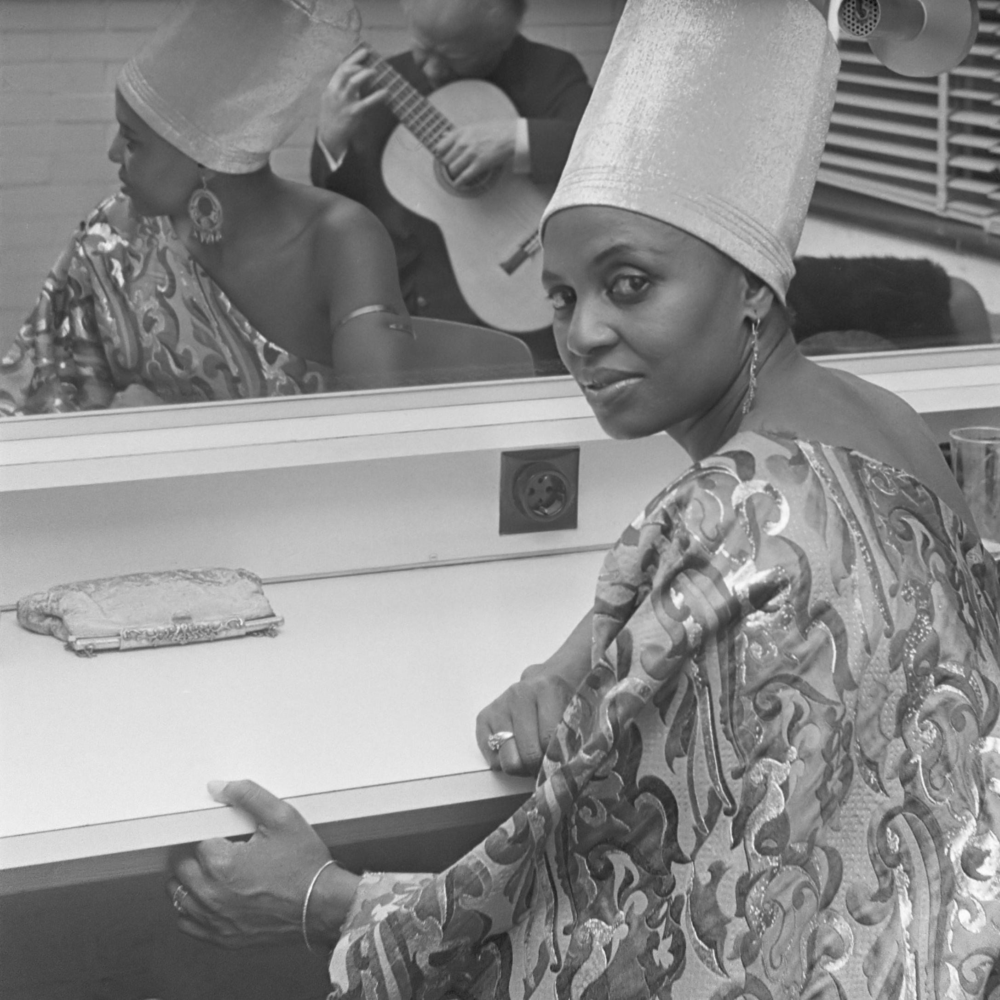

A Little History
Roots: Community, call-and-response singing, and polyrhythms stretch back centuries across Southern Africa. Instruments like the mbira (thumb piano) and marimba anchor ceremonies and storytelling.
20th Century: Urban migration and radio shaped new blends—jazz bands, township jive, and later Kwaito, a uniquely Southern African take on house music.
Today: Amapiano and Gqom carry the torch onto global stages—from Johannesburg block parties to clubs in London, Berlin, and Lisbon.
Watch: Studio Session
🎵 Listen on YouTube:
ladysmith_black_mambazo_studio_session
Miriam Makeba

Known as Mama Africa, Miriam Makeba brought South African
music to global stages. Her songs like Pata Pata and
many more. The Click Song celebrated African identity while speaking out
against apartheid.
🎵 Listen on YouTube:
Pata Pata
Mbira Collective
Interweaving thumb-piano melodies with hand drums and hosho shakers.
Amapiano Duo
Deep keys, log-drum basslines, and soulful vocals for late nights.
Gqom Unit
Durban-inspired minimal percussion — built for the dance floor.